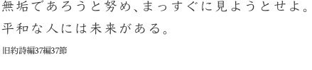
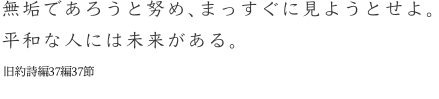

主日礼拝
毎週日曜日 ～
教会学校
毎週日曜日 ～
その他にも聖書研究など様々な集会があります、気軽にご参加ください。
他の集会をみる
教会からのお知らせ
卓球大会
日時: 6月30日（日）13:00から15:00
もっと知ろう 今、ガザで起こっていること学習会
日時: 7月7日 14:00 - 16:00
パレスチナの現状を知るため、現地で活動をしてこられた大澤 小枝さんを招いて緊急学習会をおこないます。
一人でも多くの方にお話を聞いて頂き、共に考える機会になれたらと思います。
パンフレットはこちら
場所:豊沢教会2F 礼拝堂
夏のキャンプ宿泊行事
日時: 7月29日から7月31日の2泊
日本キリスト教団 豊沢教会
- 名 称
- 日本キリスト教団 豊沢教会
- 牧師
- 原 牧人
- 所在地
- 〒150-0013 東京都渋谷区恵比寿2-32-18
- TEL
- 03-3442-7497
- FAX
- 03-5420-6064
- toyosawa.ch@gmail.com